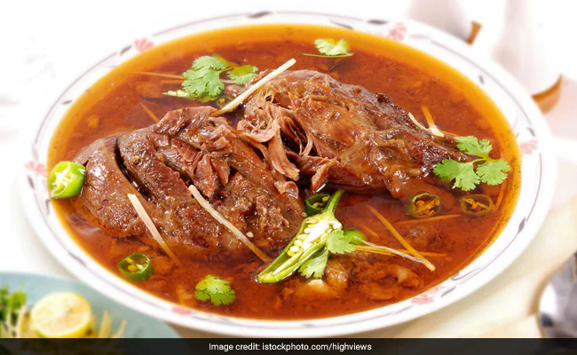

Beef Nihari
What is Nihari?
Nihari is a stew originating in Lucknow, the capital of 18th-century Awadh under the Mughal Empire in the Indian subcontinent. It consists of slow-cooked meat, mainly a shank cut of beef, lamb and mutton, or goat meat, as well as chicken and bone marrow. It is flavoured with long pepper (pippali), a relative of black pepper.
INGREDIENTS
WHOLE SPICES
- Half piece of a small Star Anise
- 1 Inch piece Cinnamon Sticks
- 2 Small Bay Leaves
GROUND SPICES
- 2-3 Cloves ground in powder
- ½ tsp Fennel Seeds Posder
- ½ tsp Ground Cardamom Seeds
- ½ tsp Paprika Powder
- ½ tsp Cumin Powder
- ½ tsp Turmeric
- ½ tsp Coriander Powder
- ½ tsp Black Pepper Powder
- ½ tsp Crushed Red Chilli
- ½ tsp Asian Red Chilli Powder
- A pinch of Nutmeg
- 1/8 tsp Garlic Powder
- ½ tbsp Nihari Masala
STEW INGREDIENTS
- 1/3 cup Neutral Oil
- 1 tbsp Butter or Ghee
- 1 Large Onion Sliced
- ¾ Inch Ginger Piece Crushed
- ¼ Cup Wheat Flour
- 3½ Cup Water
- 1 lb Beef Shank Pieces - Cut in 1½ Inch Pieces
GRANISHING INGREDIENTS
- Crispy Fried Onions
- 1 Lemon Sliced
- 2 Green Chillies Chopped
- 1 Inch Piece of Ginger cut in Julienne
- ¼ Bunch of Cilantro Chopped
PREPARATION
- Take a medium pot and heat it on medium to high flame
- Heat oil and ghee and add whole spices
- Add onion and fry for 10 minutes or until golden
- Add ginger and garlicand sauté for about 1 minute
- Add beef and fry itfor 5 minutes or until it turns golden
- Reduce the flame andadd all the powdered spices and salt
- Sauté for 30 seconds
- Carefully transferthe meat mixture into a slow cooker
- Add water and keepstirring until mix
- Cook on low flame for8 to 10 hours or overnight
- Let it cook until beef is tender
- Cooking time dependson the quality of the meat and cooker
- When the dish isabout to cook, take out whole spices
- Take out a cup ofstew into a bowl
- Add an ice cube in it and let it cool
- Heat a pan on thestove and add flour into it
- Sauté until it changes color
- Take flour and mix inthe liquid to make a smooth paste
- Bit by bit add itinto the nihari and keep stirring to avoidforming lumps
- Let it cook foraround 40 to 45 minutes
- Cook it on slow flame until oil pops out
- Pour it into theserving bowl
- Garnish it withcoriander leaves, green chilies, brown fried onion
- Delicious nihari isready
- Serve it withsheermal, naan or tandoori ready